REP 45.19.4 Clamper Cam 轴 Kit 
参考 PL:PL 45.19
Removal

执行IOT关机步骤. 确认电源已关闭并拔掉电源插头.
拆卸方背折叠裁切器的电源线支架.
拔出方背折叠裁切器的电源线.
分离方背折叠裁切器. (REP 45.1.1)
拆卸后盖板. (REP 45.4.1)
拆卸 前面 上方 盖板. (REP 45.2.1)
断开连接器 的 方背 折叠 Nip 电机. (图 1)
释放 卡箍 (x2).
断开连接器.
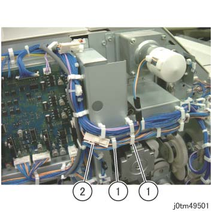
(图 1) tm49501
拆卸 方背 折叠 Nip 电机. (图 2)
拆卸螺钉（x4）.
拆卸 方背 折叠 Nip 电机.
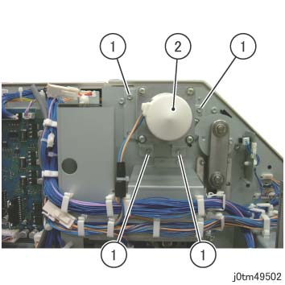
(图 2) tm49502
拆卸 链接 在后面. (图 3)
拆卸E型卡环 (x2).
拆卸 链接, Bearing (x2).
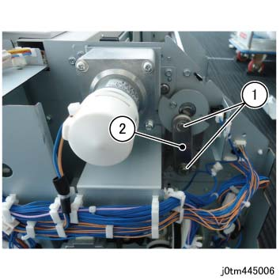
(图 3) tm445006
拆卸 执行器 在后面. (图 4)
拆卸螺钉.
拆卸 执行器.
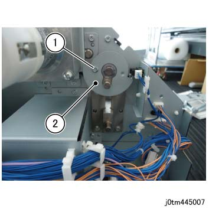
(图 4) tm445007
拆卸 Clamper Cam 在后面. (图 5)
拆卸E型卡环.
拆卸 Clamper Cam.
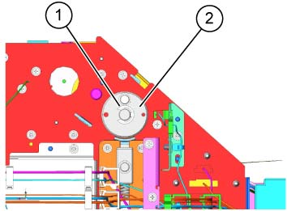
(图 5) tm445048
拆卸 链接 在前面. (图 6)
拆卸E型卡环 (x2).
拆卸 链接, Bearing (x2).
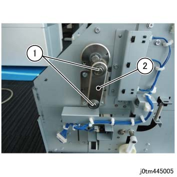
(图 6) tm445005
拆卸 Clamper Cam 在前面. (图 7)
拆卸E型卡环.
拆卸 Clamper Cam.
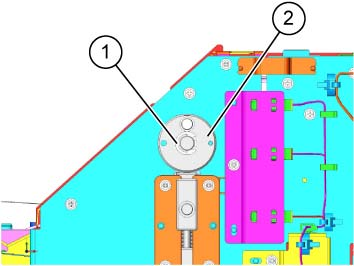
(图 7) tm445049
拆卸内盖板. (图 8)
拆卸 Tapping 螺钉.
拆卸内盖板.
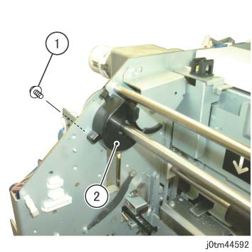
(图 8) tm44592
拆卸齿轮 支架. (图 9)
拆卸螺钉（x2）.
拆卸齿轮 支架.
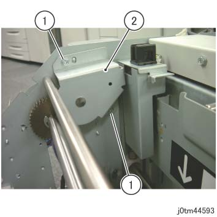
(图 9) tm44593
拆卸轴承 在后面. (图 10)
拆卸E型卡环.
拆卸轴承.
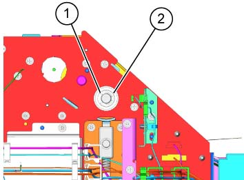
(图 10) tm445050
拆卸轴承 在前面. (图 11)
拆卸E型卡环.
拆卸轴承.
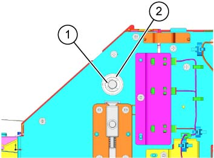
(图 11) tm445051
拆卸轴 组件 Clamper. (图 12)
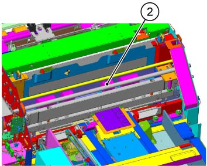
(图 12) tm445052
安装
To 安装, carry 出 the removal steps 按相反顺序.
安装 Clamper Cam 轴 Kit by following the steps 从 步骤 3 onwards.
安装 齿轮 Z40 to 轴-Clamper Cam, 和 安装 Cam Clamper 从后面. (图 13)
插入 Key 进入 轴-Clamper Cam, 和 安装 齿轮 Z40.
安装 垫圈-Plain, Nylon, Bearing, 垫圈-Plain, 和 Nylon.
插入 Key, 安装 Cam Clamper, 和 安装 E-卡扣.
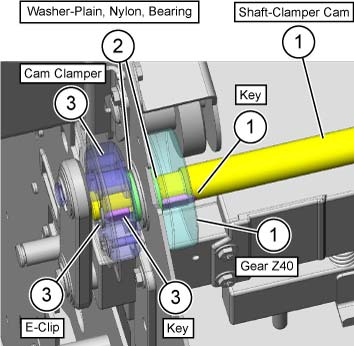
(图 13) tm445054
拆卸 Cam Clamper 从 ...的前面 轴-Clamper Cam. (图 14)
安装 Bearing, 垫圈-Plain, 和 Nylon.
插入 Key, 和 安装 E-卡扣 用于 assembling the Cam Clamper.
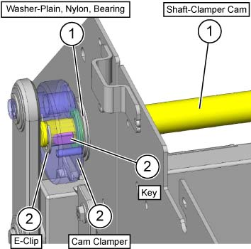
(图 14) tm445053
安装 by reversing the removal 步骤.
安装 齿轮 支架 该 已 removed in 步骤 14.
安装 Inner 盖板 该 已 removed in 步骤 13.
安装 链接 on 前面 该 已 removed in 步骤 11.
安装 parts removed in Steps 9 to 1.

步骤 10 已 omitted as it is 已经 been 已执行 in 安装 Steps 3 to 4.